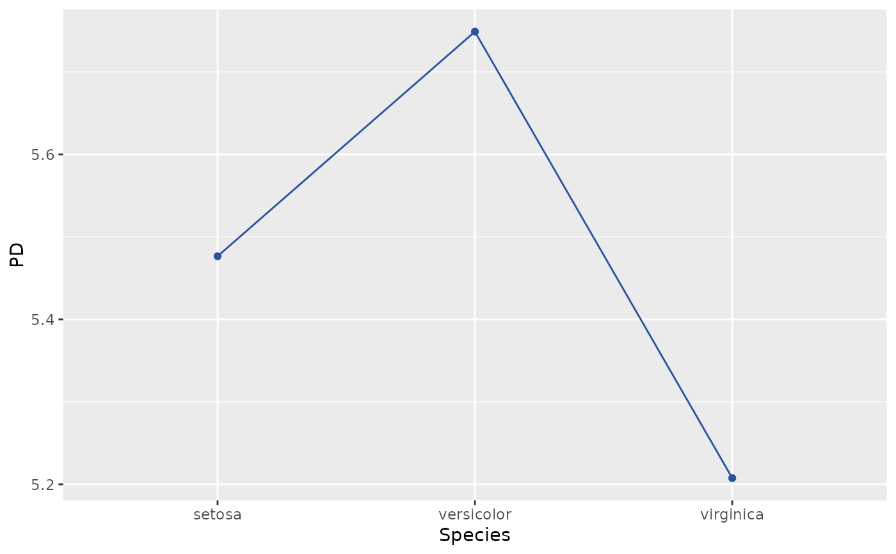
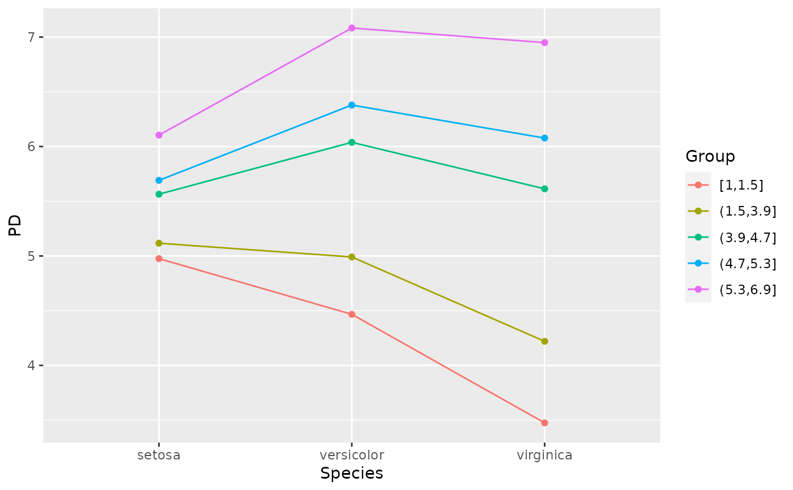
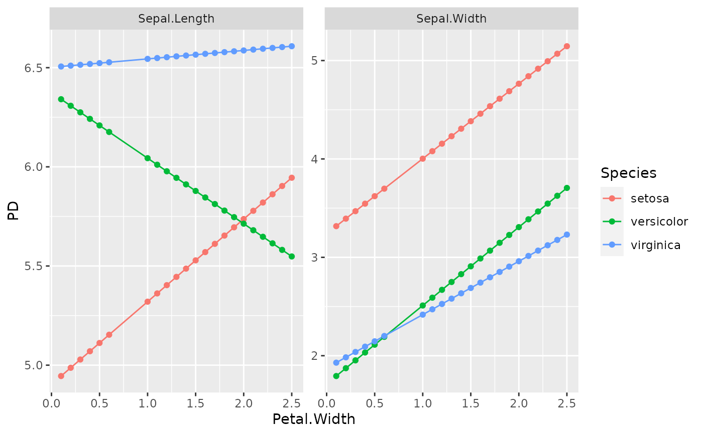
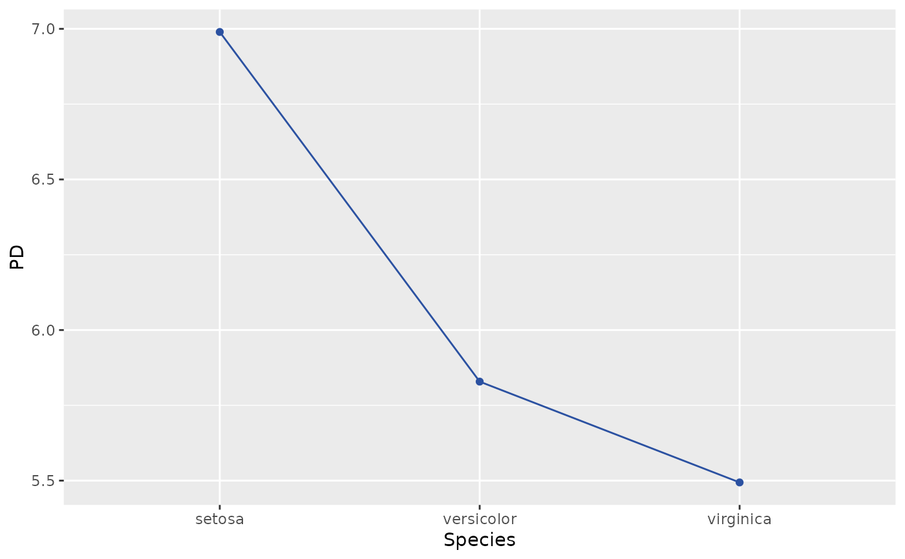

Estimates the partial dependence function of feature(s) v over a
grid of values. Both multivariate and multivariable situations are supported.
By default, and only in the univariable case, the resulting data is plotted.
PDP(object, ...)
# S3 method for default
PDP(
object,
v,
X,
pred_fun = stats::predict,
BY = NULL,
by_size = 5L,
grid = NULL,
grid_size = 36L,
trim = c(0.01, 0.99),
strategy = c("uniform", "quantile"),
n_max = 1000L,
w = NULL,
plot = length(v) == 1L,
rotate_x = FALSE,
color = "#2b51a1",
facet_scales = "free_y",
...
)
# S3 method for ranger
PDP(
object,
v,
X,
pred_fun = function(m, X, ...) stats::predict(m, X, ...)$predictions,
BY = NULL,
by_size = 5L,
grid = NULL,
grid_size = 36L,
trim = c(0.01, 0.99),
strategy = c("uniform", "quantile"),
n_max = 1000L,
w = NULL,
plot = length(v) == 1L,
rotate_x = FALSE,
color = "#2b51a1",
facet_scales = "free_y",
...
)
# S3 method for Learner
PDP(
object,
v,
X,
pred_fun = function(m, X) m$predict_newdata(X)$response,
BY = NULL,
by_size = 5L,
grid = NULL,
grid_size = 36L,
trim = c(0.01, 0.99),
strategy = c("uniform", "quantile"),
n_max = 1000L,
w = NULL,
plot = length(v) == 1L,
rotate_x = FALSE,
color = "#2b51a1",
facet_scales = "free_y",
...
)Fitted model object.
Additional arguments passed to pred_fun(object, X, ...),
for instance type = "response" in a glm() model.
Vector of feature names.
A data.frame or matrix serving as background dataset.
Prediction function of the form function(object, X, ...),
providing K >= 1 numeric predictions per row. Its first argument represents the
model object, its second argument a data structure like X. Additional arguments
(such as type = "response" in a GLM) can be passed via .... The default,
stats::predict(), will work in most cases. Note that column names in a resulting
matrix of predictions will be used as default column names in the results.
Optional grouping vector or a column name. The partial dependence
function is calculated per BY group. Each BY group
uses the same evaluation grid to improve assessment of (non-)additivity.
Numeric BY variables with more than by_size disjoint values will be
binned into by_size quantile groups of similar size.
Numeric BY variables with more than by_size unique values will
be binned into quantile groups. Only relevant if BY is not NULL.
Optional evaluation grid in line with v.
Controls the approximate grid size. If x has p columns, then each
(non-discrete) column will be reduced to about the p-th root of grid_size values.
A non-discrete numeric variable is trimmed at these quantile
probabilities before calculations. Set to c(0, 1) for no trimming.
How to find evaluation points of non-discrete numeric columns?
Either "uniform" (via pretty()) or "quantile", see description of
univariate_grid().
If X has more than n_max rows, a random sample of n_max rows is
selected from X. In this case, set a random seed for reproducibility.
Optional vector of case weights for each row of X.
Should results be plotted? Default is TRUE in the univariable case
and FALSE otherwise.
Should x axis labels be rotated by 45 degrees?
(Only if plot = TRUE.)
Color of lines and points. (Only if plot = TRUE.)
Value passed to facet_wrap(scales = ...), only relevant
for multivariate output. (Only if plot = TRUE.)
If plot = TRUE, a "ggplot" object. Otherwise a data.frame with the evaluation
grid, the optional BY variable, and the corresponding partial dependencies as
columns.
PDP(default): Default method.
PDP(ranger): Method for "ranger" models.
PDP(Learner): Method for "mlr3" models.
Let \(F: R^p \to R\) denote the prediction function that maps the \(p\)-dimensional feature vector \(\mathbf{x} = (x_1, \dots, x_p)\) to its prediction. Furthermore, let $$ F_s(\mathbf{x}_s) = E_{\mathbf{x}_{\setminus s}}(F(\mathbf{x}_s, \mathbf{x}_{\setminus s})) $$ be the partial dependence function of \(F\) on the feature subset \(\mathbf{x}_s\), where \(s \subseteq \{1, \dots, p\}\), as introduced in Friedman (2001). Here, the expectation runs over the joint marginal distribution of features \(\mathbf{x}_{\setminus s}\) not in \(\mathbf{x}_s\).
Given data, \(F_s(\mathbf{x}_s)\) can be estimated by the empirical partial dependence function
$$ \hat F_s(\mathbf{x}_s) = \frac{1}{n} \sum_{i = 1}^n F(\mathbf{x}_s, \mathbf{x}_{i\setminus s}), $$ where \(\mathbf{x}_{i\setminus s}\) \(i = 1, \dots, n\), are the observed values of \(\mathbf{x}_{\setminus s}\).
A partial dependence plot (PDP) plots the values of \(\hat F_s(\mathbf{x}_s)\) over a grid of evaluation points \(\mathbf{x}_s\).
Friedman, Jerome H. "Greedy Function Approximation: A Gradient Boosting Machine." Annals of Statistics 29, no. 5 (2001): 1189-1232.
# MODEL 1: Linear regression
fit <- lm(Sepal.Length ~ . + Species * Petal.Length, data = iris)
PDP(fit, v = "Species", X = iris)

PDP(fit, v = "Species", X = iris, plot = FALSE)
#> Species y
#> 1 setosa 5.476540
#> 2 versicolor 5.748857
#> 3 virginica 5.207491
# Stratified by numeric BY variable (which is automatically binned)
PDP(fit, v = "Species", X = iris, BY = iris$Petal.Length)

# Multivariable input (no plots available)
PDP(fit, v = c("Species", "Petal.Width"), X = iris)
#> Species Petal.Width y
#> 1 setosa 0.0 5.813992
#> 2 versicolor 0.0 6.086309
#> 3 virginica 0.0 5.544943
#> 4 setosa 0.5 5.673309
#> 5 versicolor 0.5 5.945626
#> 6 virginica 0.5 5.404260
#> 7 setosa 1.0 5.532626
#> 8 versicolor 1.0 5.804942
#> 9 virginica 1.0 5.263576
#> 10 setosa 1.5 5.391943
#> 11 versicolor 1.5 5.664259
#> 12 virginica 1.5 5.122893
#> 13 setosa 2.0 5.251260
#> 14 versicolor 2.0 5.523576
#> 15 virginica 2.0 4.982210
#> 16 setosa 2.5 5.110576
#> 17 versicolor 2.5 5.382893
#> 18 virginica 2.5 4.841527
# MODEL 2: Multi-response linear regression
fit <- lm(as.matrix(iris[1:2]) ~ Petal.Length + Petal.Width * Species, data = iris)
PDP(fit, v = "Petal.Width", X = iris, BY = "Species")

# Multivariate, multivariable, and BY (no plot)
PDP(fit, v = c("Petal.Width", "Petal.Length"), X = iris, BY = "Species")
#> Species Petal.Width Petal.Length Sepal.Length Sepal.Width
#> 1 setosa 0.0 1 4.469355 3.177012
#> 2 setosa 0.5 1 4.677664 3.558038
#> 3 setosa 1.0 1 4.885973 3.939064
#> 4 setosa 1.5 1 5.094282 4.320090
#> 5 setosa 2.0 1 5.302591 4.701116
#> 6 setosa 2.5 1 5.510900 5.082142
#> 7 setosa 0.0 2 5.409088 3.314508
#> 8 setosa 0.5 2 5.617397 3.695534
#> 9 setosa 1.0 2 5.825706 4.076560
#> 10 setosa 1.5 2 6.034015 4.457586
#> 11 setosa 2.0 2 6.242324 4.838612
#> 12 setosa 2.5 2 6.450633 5.219638
#> 13 setosa 0.0 3 6.348821 3.452004
#> 14 setosa 0.5 3 6.557130 3.833030
#> 15 setosa 1.0 3 6.765439 4.214056
#> 16 setosa 1.5 3 6.973748 4.595082
#> 17 setosa 2.0 3 7.182057 4.976108
#> 18 setosa 2.5 3 7.390366 5.357134
#> 19 setosa 0.0 4 7.288554 3.589500
#> 20 setosa 0.5 4 7.496863 3.970526
#> 21 setosa 1.0 4 7.705172 4.351552
#> 22 setosa 1.5 4 7.913481 4.732578
#> 23 setosa 2.0 4 8.121790 5.113604
#> 24 setosa 2.5 4 8.330098 5.494630
#> 25 setosa 0.0 5 8.228286 3.726996
#> 26 setosa 0.5 5 8.436595 4.108022
#> 27 setosa 1.0 5 8.644904 4.489048
#> 28 setosa 1.5 5 8.853213 4.870074
#> 29 setosa 2.0 5 9.061522 5.251100
#> 30 setosa 2.5 5 9.269831 5.632126
#> 31 setosa 0.0 6 9.168019 3.864493
#> 32 setosa 0.5 6 9.376328 4.245519
#> 33 setosa 1.0 6 9.584637 4.626544
#> 34 setosa 1.5 6 9.792946 5.007570
#> 35 setosa 2.0 6 10.001255 5.388596
#> 36 setosa 2.5 6 10.209564 5.769622
#> 37 setosa 0.0 7 10.107752 4.001989
#> 38 setosa 0.5 7 10.316061 4.383015
#> 39 setosa 1.0 7 10.524370 4.764041
#> 40 setosa 1.5 7 10.732679 5.145067
#> 41 setosa 2.0 7 10.940988 5.526093
#> 42 setosa 2.5 7 11.149297 5.907118
#> 43 versicolor 0.0 1 3.310450 1.265441
#> 44 versicolor 0.5 1 3.145300 1.663752
#> 45 versicolor 1.0 1 2.980149 2.062064
#> 46 versicolor 1.5 1 2.814999 2.460375
#> 47 versicolor 2.0 1 2.649849 2.858687
#> 48 versicolor 2.5 1 2.484698 3.256998
#> 49 versicolor 0.0 2 4.250183 1.402937
#> 50 versicolor 0.5 2 4.085033 1.801248
#> 51 versicolor 1.0 2 3.919882 2.199560
#> 52 versicolor 1.5 2 3.754732 2.597871
#> 53 versicolor 2.0 2 3.589581 2.996183
#> 54 versicolor 2.5 2 3.424431 3.394494
#> 55 versicolor 0.0 3 5.189916 1.540433
#> 56 versicolor 0.5 3 5.024765 1.938744
#> 57 versicolor 1.0 3 4.859615 2.337056
#> 58 versicolor 1.5 3 4.694464 2.735367
#> 59 versicolor 2.0 3 4.529314 3.133679
#> 60 versicolor 2.5 3 4.364164 3.531990
#> 61 versicolor 0.0 4 6.129648 1.677929
#> 62 versicolor 0.5 4 5.964498 2.076240
#> 63 versicolor 1.0 4 5.799348 2.474552
#> 64 versicolor 1.5 4 5.634197 2.872863
#> 65 versicolor 2.0 4 5.469047 3.271175
#> 66 versicolor 2.5 4 5.303896 3.669486
#> 67 versicolor 0.0 5 7.069381 1.815425
#> 68 versicolor 0.5 5 6.904231 2.213737
#> 69 versicolor 1.0 5 6.739080 2.612048
#> 70 versicolor 1.5 5 6.573930 3.010360
#> 71 versicolor 2.0 5 6.408779 3.408671
#> 72 versicolor 2.5 5 6.243629 3.806982
#> 73 versicolor 0.0 6 8.009114 1.952921
#> 74 versicolor 0.5 6 7.843963 2.351233
#> 75 versicolor 1.0 6 7.678813 2.749544
#> 76 versicolor 1.5 6 7.513663 3.147856
#> 77 versicolor 2.0 6 7.348512 3.546167
#> 78 versicolor 2.5 6 7.183362 3.944479
#> 79 versicolor 0.0 7 8.948847 2.090417
#> 80 versicolor 0.5 7 8.783696 2.488729
#> 81 versicolor 1.0 7 8.618546 2.887040
#> 82 versicolor 1.5 7 8.453395 3.285352
#> 83 versicolor 2.0 7 8.288245 3.683663
#> 84 versicolor 2.5 7 8.123094 4.081975
#> 85 virginica 0.0 1 2.224070 1.249196
#> 86 virginica 0.5 1 2.245360 1.520401
#> 87 virginica 1.0 1 2.266650 1.791605
#> 88 virginica 1.5 1 2.287940 2.062810
#> 89 virginica 2.0 1 2.309230 2.334015
#> 90 virginica 2.5 1 2.330520 2.605220
#> 91 virginica 0.0 2 3.163803 1.386692
#> 92 virginica 0.5 2 3.185093 1.657897
#> 93 virginica 1.0 2 3.206383 1.929102
#> 94 virginica 1.5 2 3.227672 2.200306
#> 95 virginica 2.0 2 3.248962 2.471511
#> 96 virginica 2.5 2 3.270252 2.742716
#> 97 virginica 0.0 3 4.103535 1.524188
#> 98 virginica 0.5 3 4.124825 1.795393
#> 99 virginica 1.0 3 4.146115 2.066598
#> 100 virginica 1.5 3 4.167405 2.337802
#> 101 virginica 2.0 3 4.188695 2.609007
#> 102 virginica 2.5 3 4.209985 2.880212
#> 103 virginica 0.0 4 5.043268 1.661684
#> 104 virginica 0.5 4 5.064558 1.932889
#> 105 virginica 1.0 4 5.085848 2.204094
#> 106 virginica 1.5 4 5.107138 2.475299
#> 107 virginica 2.0 4 5.128428 2.746503
#> 108 virginica 2.5 4 5.149718 3.017708
#> 109 virginica 0.0 5 5.983001 1.799180
#> 110 virginica 0.5 5 6.004291 2.070385
#> 111 virginica 1.0 5 6.025581 2.341590
#> 112 virginica 1.5 5 6.046871 2.612795
#> 113 virginica 2.0 5 6.068160 2.883999
#> 114 virginica 2.5 5 6.089450 3.155204
#> 115 virginica 0.0 6 6.922734 1.936676
#> 116 virginica 0.5 6 6.944023 2.207881
#> 117 virginica 1.0 6 6.965313 2.479086
#> 118 virginica 1.5 6 6.986603 2.750291
#> 119 virginica 2.0 6 7.007893 3.021496
#> 120 virginica 2.5 6 7.029183 3.292700
#> 121 virginica 0.0 7 7.862466 2.074173
#> 122 virginica 0.5 7 7.883756 2.345377
#> 123 virginica 1.0 7 7.905046 2.616582
#> 124 virginica 1.5 7 7.926336 2.887787
#> 125 virginica 2.0 7 7.947626 3.158992
#> 126 virginica 2.5 7 7.968916 3.430197
# MODEL 3: Gamma GLM -> pass options to predict() via ...
fit <- glm(
Sepal.Length ~ . + Petal.Width:Species,
data = iris,
family = Gamma(link = log)
)
PDP(fit, v = "Species", X = iris, type = "response")
